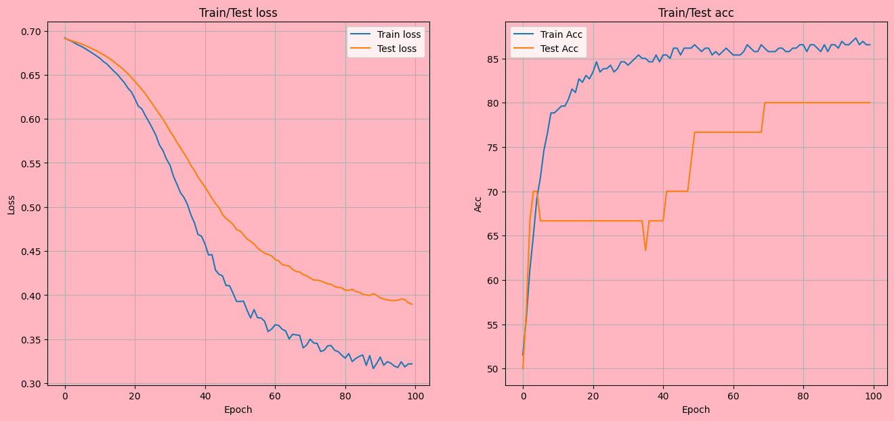

Heart disease detector
For this one I used a dataset that I found online about 300 patients, I thought it was not enough data for training but 80% accuracy doesnt seem that awful for something quick and cheap
# import libraries
import numpy as np
import torch
import torch.nn as nn
import torch.nn.functional as F
from torch.utils.data import DataLoader,TensorDataset
from sklearn.model_selection import train_test_split
# NEW!
import sklearn.metrics as skm
# for dataset management
import pandas as pd
import matplotlib.pyplot as plt
from IPython import display
from matplotlib_inline.backend_inline import set_matplotlib_formats
# import the data
url = 'https://archive.ics.uci.edu/ml/machine-learning-databases/heart-disease/processed.cleveland.data'
data = pd.read_csv(url,sep=',',header=None)
data.columns = ['age','sex','cp','trestbps','chol','fbs','restecg','thalach','exang','oldpeak','slope','ca','thal','DISEASE']
# data contain some ?'s; replace with NaN and drop those rows
data = data.replace('?',np.nan).dropna()
data.shape
# z-score the non-categorical columns
cols2zscore = data.keys()
cols2zscore = cols2zscore.drop(['sex','fbs','exang','DISEASE'])
cols2zscore
for c in cols2zscore:
d = pd.to_numeric(data[c]) # force to numeric (addresses some data-format issues)
data[c] = (d - d.mean())/d.std(ddof=1)
data['DISEASE'][data['DISEASE']>0]=1
# convert from pandas dataframe to tensor
dataT = torch.tensor( data[data.keys().drop('DISEASE')].values ).float()
labelsT = torch.tensor( data['DISEASE'].values ).float()
labelsT = labelsT[:,None] # transform to matrix
# use scikitlearn to split the data
train_data,test_data, train_labels,test_labels = train_test_split(dataT, labelsT, test_size=.1)
# then convert them into PyTorch Datasets (note: already converted to tensors)
train_dataDataset = TensorDataset(train_data,train_labels)
test_dataDataset = TensorDataset(test_data,test_labels)
# finally, translate into dataloader objects
batchsize = 20
train_loader = DataLoader(train_dataDataset,batch_size=batchsize,shuffle=True,drop_last=True)
test_loader = DataLoader(test_dataDataset,batch_size=test_dataDataset.tensors[0].shape[0])
# create a class for the model
def createTheDrNet():
class DrNet(nn.Module):
def __init__(self):
super().__init__()
### input layer
self.input = nn.Linear(13,32)
### hidden layer
self.fc1 = nn.Linear(32,64)
self.fc2 = nn.Linear(64,10)
### output layer
self.output = nn.Linear(10,1)
# forward pass
def forward(self,x):
x = F.relu(self.input(x))
x = F.relu(self.fc1(x) )
x = F.relu(self.fc2(x))
return self.output(x)
# create the model instance
DrNet = DrNet()
# loss function
lossfun = nn.BCEWithLogitsLoss()
# optimizer
optimizer = torch.optim.Adam(DrNet.parameters(),lr=.0001)
return DrNet,lossfun,optimizer
# test the model on a bit of data
DrNet,lossfun,optimizer=createTheDrNet()
X,y = next(iter(train_loader))
yHat = DrNet(X)
# test the loss function
lossfun = nn.BCEWithLogitsLoss()
#lossfun(yHat,y)
# a function that trains the model
# global parameter
numepochs = 100
def trainTheModel():
# create a new model
DrNet,lossfun,optimizer = createTheDrNet()
# initialize losses
trainAcc=[]
testAcc=[]
trainLoss = torch.zeros(numepochs)
testLoss = torch.zeros(numepochs)
# loop over epochs
for epochi in range(numepochs):
# switch on training mode
DrNet.train()
# loop over training data batches
batchAcc=[]
batchLoss = []
for X,y in train_loader:
# forward pass and loss
yHat = DrNet(X)
loss = lossfun(yHat,y)
# backprop
optimizer.zero_grad()
loss.backward()
optimizer.step()
# loss from this batch
batchLoss.append(loss.item())
#compute accuracy
accOfBatch=(((yHat>0).float())==y).float()
accOfBatchPercentage=100*torch.mean(accOfBatch)
batchAcc.append(accOfBatchPercentage)
# and get average losses across the batches
trainLoss[epochi] = np.mean(batchLoss)
#accuracy of each epoch
trainAcc.append( np.mean(batchAcc) )
# test accuracy
DrNet.eval()
X,y = next(iter(test_loader)) # extract X,y from test dataloader
with torch.no_grad(): # deactivates autograd
yHat = DrNet(X)
accOfTest=(((yHat>0).float())==y).float()
accOfTestPercentage=100*torch.mean(accOfTest)
testAcc.append(accOfTestPercentage)
testLoss[epochi] = lossfun(yHat,y).item()
# function output
return trainLoss,testLoss,trainAcc,testAcc,DrNet
trainLoss, testLoss, trainAcc, testAcc, DrNet = trainTheModel()
# plot some results
fig,ax = plt.subplots(1,2,figsize=(16,7))
fig.set_facecolor('lightpink')
ax[0].set_facecolor('lightpink')
ax[0].plot(trainLoss,label='Train loss')
ax[0].plot(testLoss,label='Test loss')
ax[0].set_title('Train/Test loss')
ax[0].set_xlabel('Epoch')
ax[0].set_ylabel('Loss')
ax[0].legend()
ax[0].grid()
#accuracy
ax[1].set_facecolor('lightpink')
ax[1].plot(trainAcc,label='Train Acc')
ax[1].plot(testAcc,label='Test Acc')
ax[1].set_title('Train/Test acc')
ax[1].set_xlabel('Epoch')
ax[1].set_ylabel('Acc')
ax[1].legend()
ax[1].grid()
plt.show()